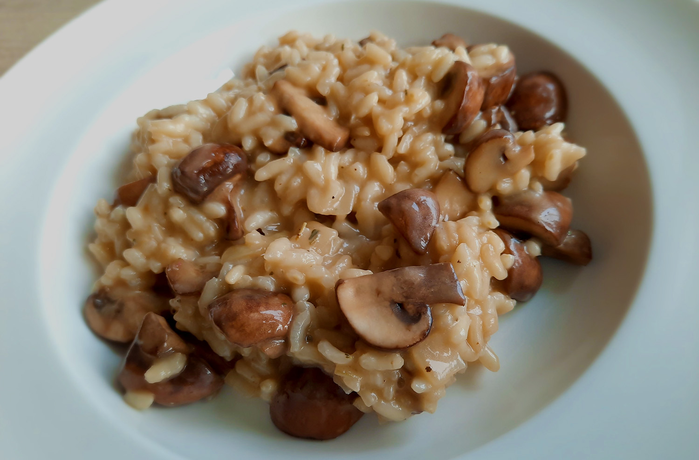

banh xeo hoi an style

japanse beef teriyaki

koreaanse bibimbap

amerikaanse caesar salade

spaghetti carbonara

paddenstoelenrisotto

Bereidingsduur: 45 minuten
Aantal personen: 2
Ingrediënten:
250 gram risottorijst
400 gram kastanjechampignons
2 teentjes knoflook
1 ui
50 gram geraspte parmezaanse kaas
25 gram boter
1 eetlepel tijm
1 blokje groentebouillon
naar smaak olijfolie
naar smaak peper
250 gram risottorijst
400 gram kastanjechampignons
2 teentjes knoflook
1 ui
50 gram geraspte parmezaanse kaas
25 gram boter
1 eetlepel tijm
1 blokje groentebouillon
naar smaak olijfolie
naar smaak peper
Instructies:
1. Pak een steelpan en verwarm hierin 1 liter water en het bouillonblokje. Houd dit warm. Snijd ondertussen de ui en knoflook in kleine stukjes.
2. Verhit een klein beetje olijfolie in een soeppan en voeg de ui en knoflook toe. Bak 5 minuten.
3. Voeg de risottorijst toe en bak 3 minuten mee en roer goed tot de korrels glazig zijn.
4. Voeg een soepopscheplepel bouillon toe en roer tot de rijst de bouillon heeft opgenomen. Voeg dan vervolgens weer een lepel toe en herhaal tot de rijst gaar is en het mengsel dik en een vloeibaar is.
5. Snijd ondertussen de paddenstoelen en bak dit in een koekenpan.
6. Als de rijst klaar is, neem deze van het vuur. Roer de boter en kaas door de rijst tot de boter is gesmolten. Voeg de champignons, tijm en wat peper toe en roer goed door elkaar. Smakelijk!
1. Pak een steelpan en verwarm hierin 1 liter water en het bouillonblokje. Houd dit warm. Snijd ondertussen de ui en knoflook in kleine stukjes.
2. Verhit een klein beetje olijfolie in een soeppan en voeg de ui en knoflook toe. Bak 5 minuten.
3. Voeg de risottorijst toe en bak 3 minuten mee en roer goed tot de korrels glazig zijn.
4. Voeg een soepopscheplepel bouillon toe en roer tot de rijst de bouillon heeft opgenomen. Voeg dan vervolgens weer een lepel toe en herhaal tot de rijst gaar is en het mengsel dik en een vloeibaar is.
5. Snijd ondertussen de paddenstoelen en bak dit in een koekenpan.
6. Als de rijst klaar is, neem deze van het vuur. Roer de boter en kaas door de rijst tot de boter is gesmolten. Voeg de champignons, tijm en wat peper toe en roer goed door elkaar. Smakelijk!